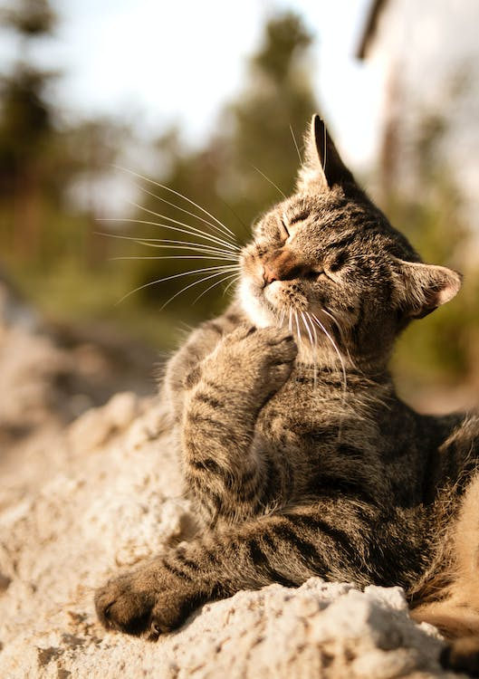
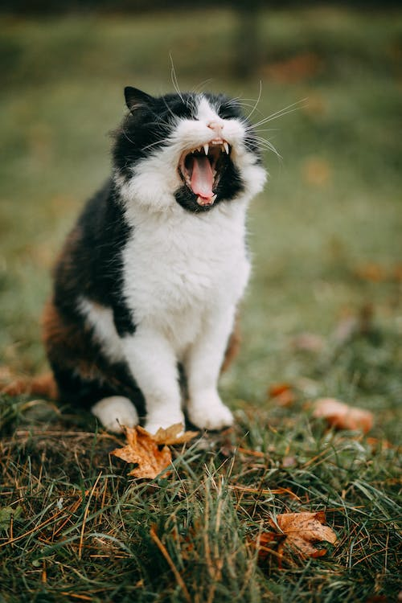
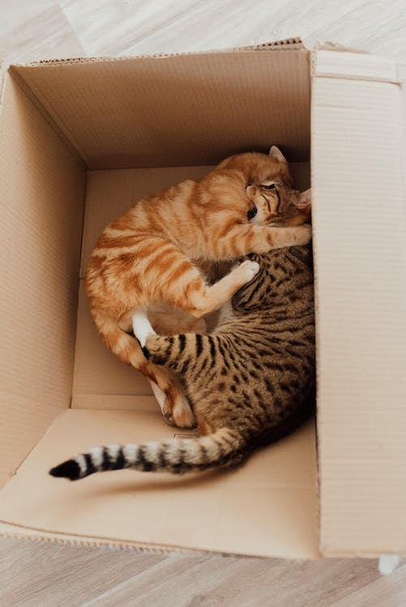
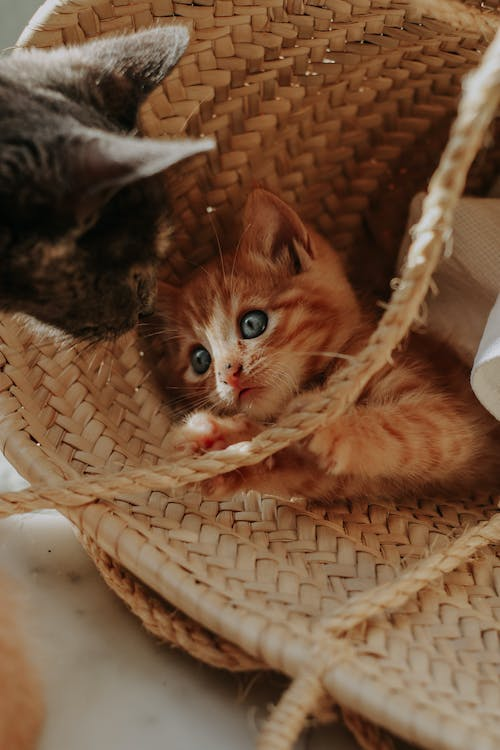

El gato doméstico, llamado más comúnmente gato, y de forma coloquial minino, michino, michi, micho, mizo, miz, morroño o morrongo, y algunos nombres más, es un mamífero carnívoro de la familia Felidae.
Galería

color:gris

color:blanco y negro

color: amarillo

color: amarillito